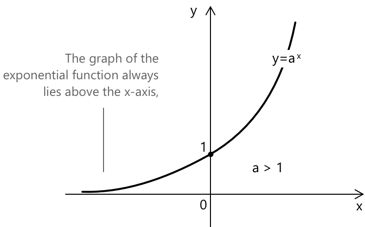

Показникові рівняння
Вступ
Показникові рівняння — це рівняння, у яких невідома змінна знаходиться в показнику степеня. Зазвичай вони мають вигляд:
\[a^{f(x)} = b^{g(x)} \]
або частіше, у простіших випадках:
\[a^{x} = b \]
Припустимо, що \( a \) та \( b \) — додатні дійсні числа і що \( a \ne 1 \). Оскільки \( a^x > 0 \) для всіх \( x \in \mathbb{R} \), коли \( a > 0 \), показникові рівняння не мають розв'язків, якщо \( b \le 0 \), тоді як воно має єдиний розв'язок, якщо \( b > 0 \).
Нагадаємо загальну поведінку показникової функції, наприклад, коли \( a > 1 \).

У цьому випадку графік функції \( y = a^x \) повністю лежить вище осі x, ніколи не торкається її, завжди проходить через точку \( (0, 1) \) на осі y і зростає зліва направо.
Фундаментальний принцип \(1^x\)
Рівняння
\[ 1^x = 1 \]
виконується для кожного дійсного числа \( x \). Це означає, що коли \( a = 1 \) і \( b = 1 \), показникові рівняння має безліч розв'язків і, отже, вважається невизначеним. \(1^x = 1\) вважається фундаментальним принципом у математиці. Це тому, що незалежно від значення \(x\), вираз \(1^x\) завжди дорівнює \(1\).
Як розв'язувати квадратні рівняння вигляду \( a^{f(x)} = b \)
Рівняння вигляду \( a^{f(x)} = b \) можна розв'язати, переписавши \( b \) як степінь \( a \). У цьому випадку маємо:
\[ a^{f(x)} = a^{k} \]
Оскільки основи з обох сторін рівняння однакові, ми прирівнюємо показники степенів:
\[ f(x) = k \]
Приклад 1
Розв'яжемо, наприклад, наступне показникові рівняння:
\[3^{x^2-2x}-27 = 0\]
Перепишемо рівняння, щоб привести його до вигляду \( a^{f(x)} = b \). Маємо:
\[ \begin{align} &3^{x^2-2x} – 27 = 0\\[0.5em] &3^{x^2-2x} = 27\\[0.5em] &3^{x^2-2x} = 3^3 \end{align} \]
Тепер, оскільки обидві частини рівняння мають однакову основу, ми можемо прирівняти показники:
\[ \begin{align} &x^2-2x = 3\\[0.5em] &x^2-2x – 3 = 0 \end{align} \]
Ми отримали квадратне рівняння, яке можна негайно розв'язати шляхом розкладання полінома на множники. Отримуємо:
\[(x + 1)(x - 3) = 0\]
Розв'язками, що задовольняють рівняння, є:
\[ x_1 = -1 \quad \text{та} \quad x_2 = 3 \]
Коли основи різні: розв'язування за допомогою логарифмів
У попередньому прикладі ми розглянули рівняння, яке можна було звести до рівності степенів з однаковою основою. Але що, якщо це неможливо, коли дві частини рівняння мають різні основи? Як діяти в таких випадках? Розглянемо показникові рівняння:
\[ 3^{x^2} = 4 \]
Оскільки вирази в лівій і правій частинах рівняння не можна переписати з однаковою основою, ми використовуємо логарифми, щоб переписати їх таким чином, щоб винести \( x \) з показника. Маємо:
\[\log_{3} 3^{x^2} = \log_{3} 4\]
За властивостями логарифмів ми можемо переписати ліву частину як:
\[ \begin{align} &x^2 \log_{3} 3 = \log_{3} 4\\[0.5em] &x^2 = \log_{3} 4\\[0.5em] &x= \pm \sqrt{\log_{3} 4} \end{align} \]
У рівняннях вигляду \( a^{f(x)} = b^{f(x)} \), якщо \( f(x) \ne 0 \), ми можемо звести рівняння, представивши \( b \) як степінь \( a \), щоб обидві частини мали однакову основу. Це дозволяє нам порівняти показники безпосередньо, як у прикладі 1. Розглянемо рівняння:
\[ 3^{x + 3} = 9^{\frac{1 – x}{2}} \]
За властивостями степенів, маємо:
\[ \begin{align} &3^{x + 3} = (3^{2})^{\frac{1 – x}{2}}\\[0.5em] &3^{x + 3} = 3^{1 – x}\\[0.5em] \end{align} \]
На цьому етапі ми переписали обидві частини як степені з однаковою основою, тому ми можемо прирівняти показники:
\[ \begin{align} &x + 3 = 1 – x\\[0.5em] &2x = 1 – 3\\[0.5em] &x = -1 \end{align} \]